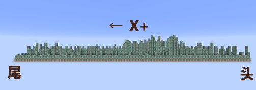
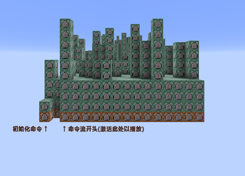
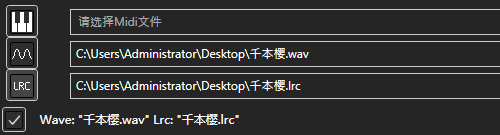
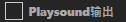
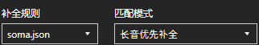

常见问题
如何播放命令流
命令流按照导出设置中的"延伸方向"延伸。


- "初始化命令"包括计分板创建和实体创建，用于生成接口。
- "重置命令"在命令流末端，用于销毁创建的接口。
- "命令流开头"被激活即可播放。
没有Playsound命令
可能你没有导入Mid文件。

也有可能你没有勾选"Playsound输出"。

没有声音
如果有Playsound命令却没有声音，极有可能是你未加载对应的资源包。

若仅使用原版音色，可以改用"minecraft.json"进行自动补全。或者填写原版音色并启用"音高输出"。
乐器显示不全
这是因为Midi中并没有划定音轨的命令，导致A2M无法正确读取信息。(如NBS导出的Midi)

一种解决方法是：将其导入至编曲软件(如FlStudio)以自动划分音轨，再导出并覆盖原文件。
未响应 & 错误崩溃
- 导入文件过大占用内存
- 文件问题
- 无法启动
- 界面交互后 & 未知原因
如果进程Audio2Minecraft.exe消耗资源量巨大，则是此原因造成的。可以等待其运行结束。
检查Midi、Wav、Lrc是否损坏或错误。
检查.NET版本是否在4.5以上，否则安装版本在4.5以上的.NET Framework。
在Github、论坛、贴吧向作者反馈问题，等待解答与修复。